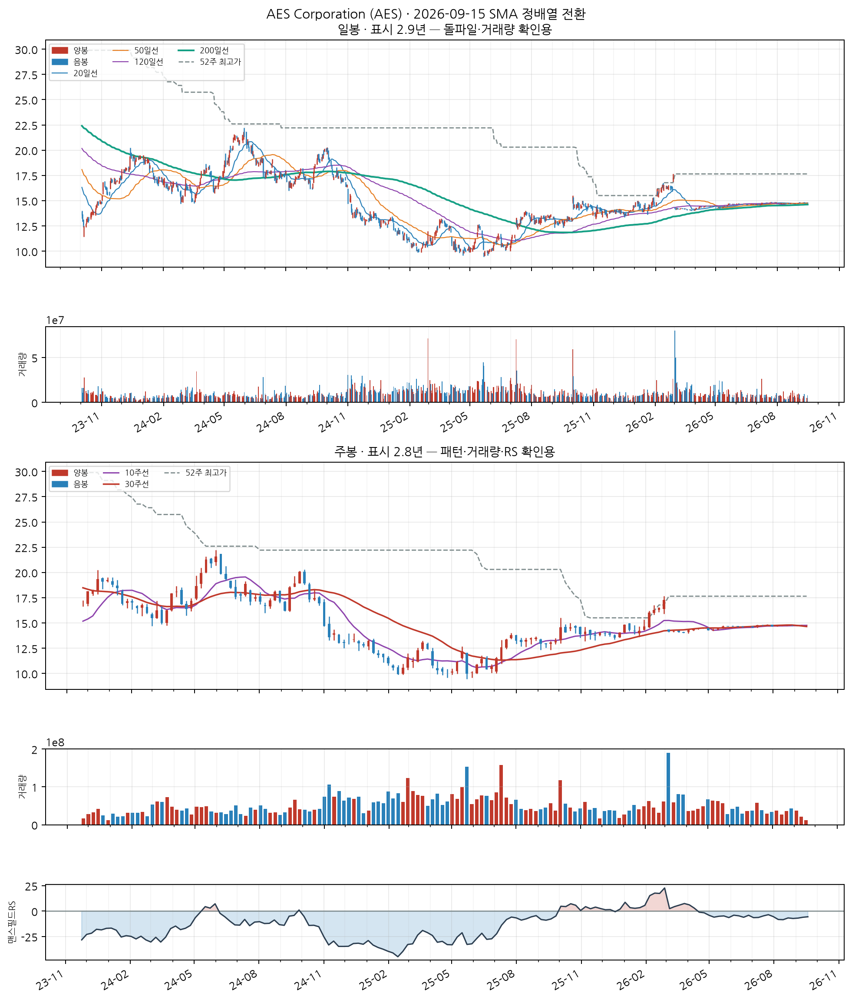
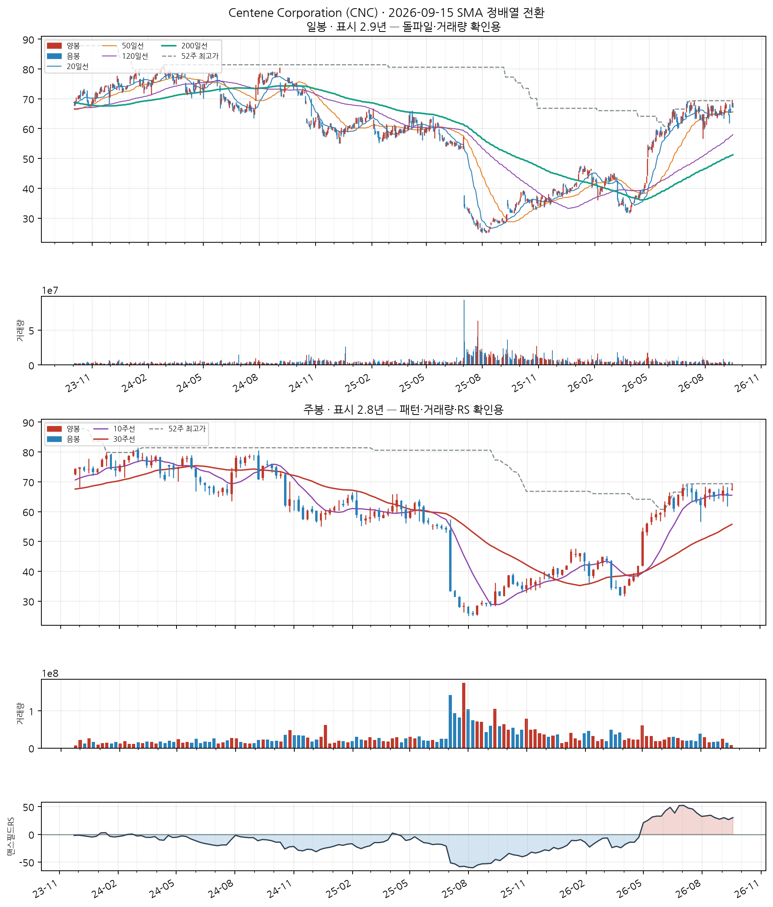
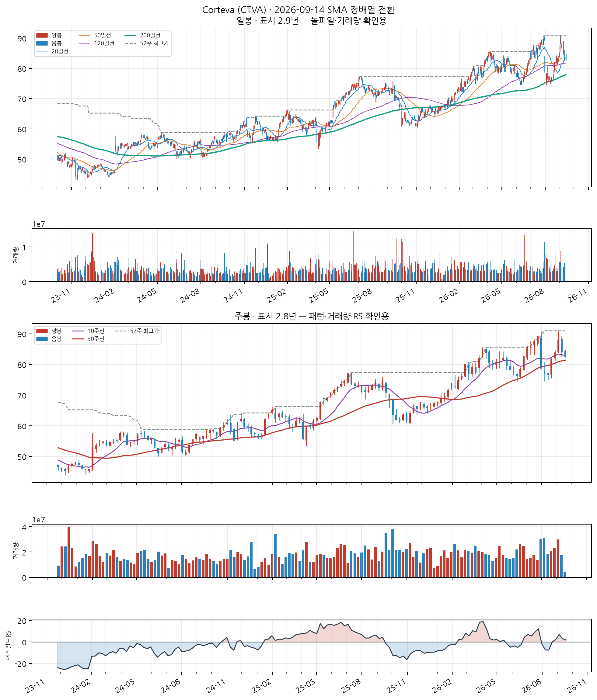
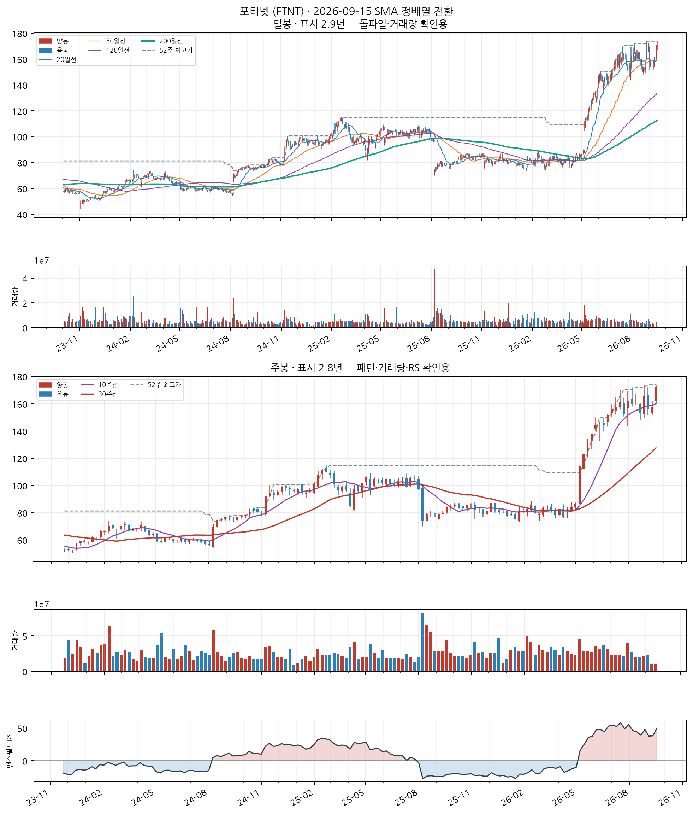
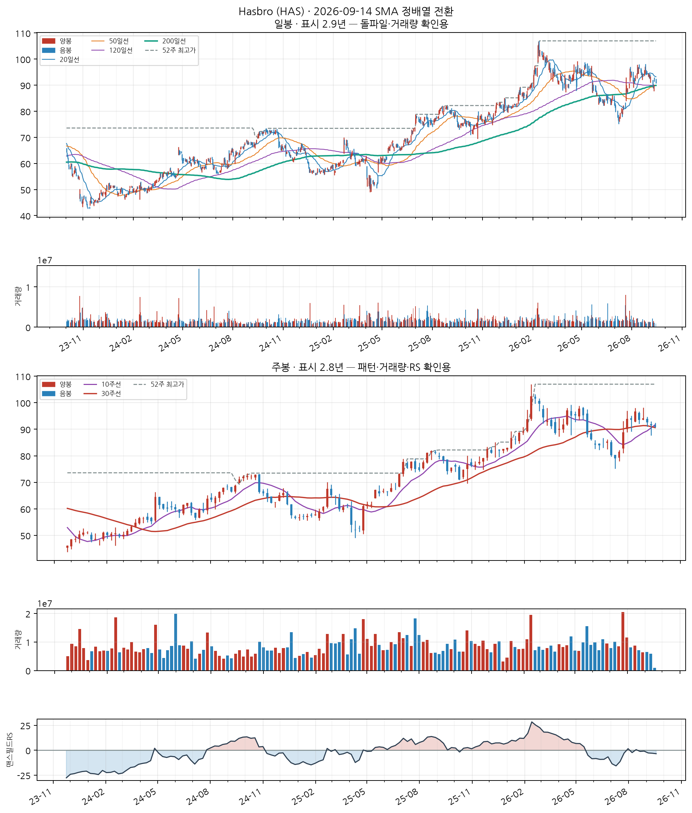
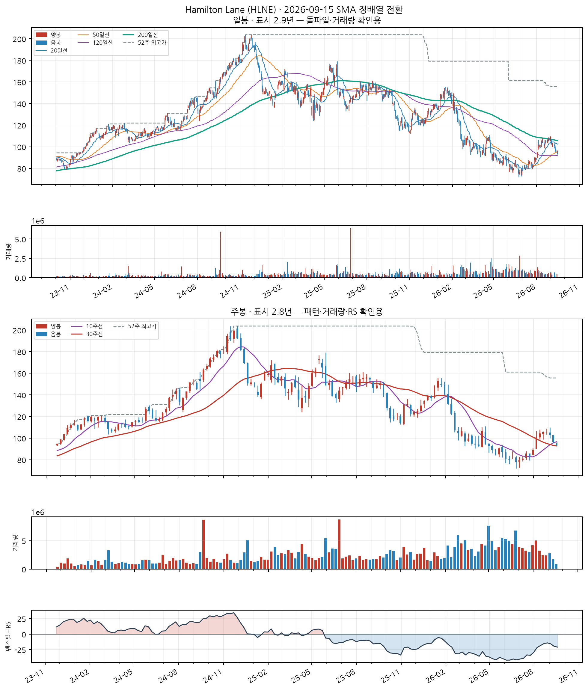
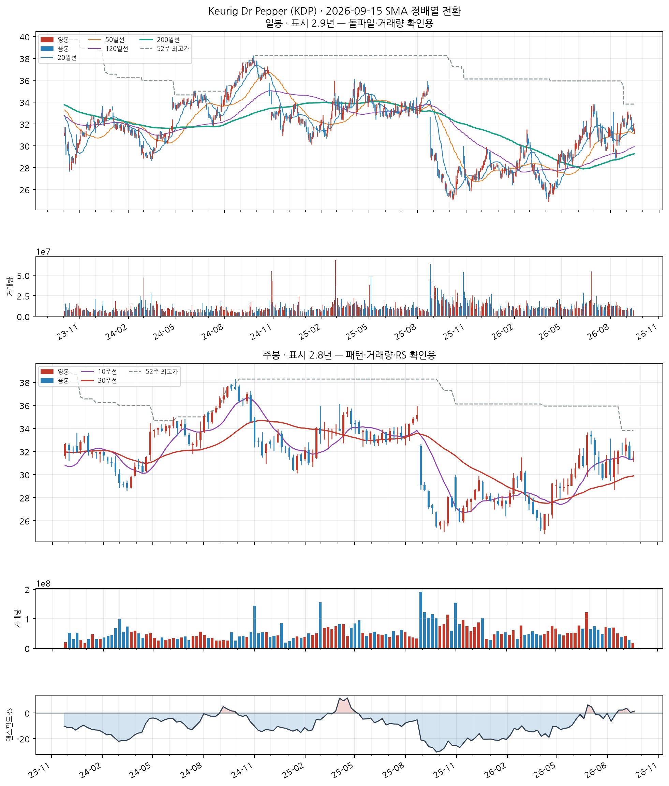
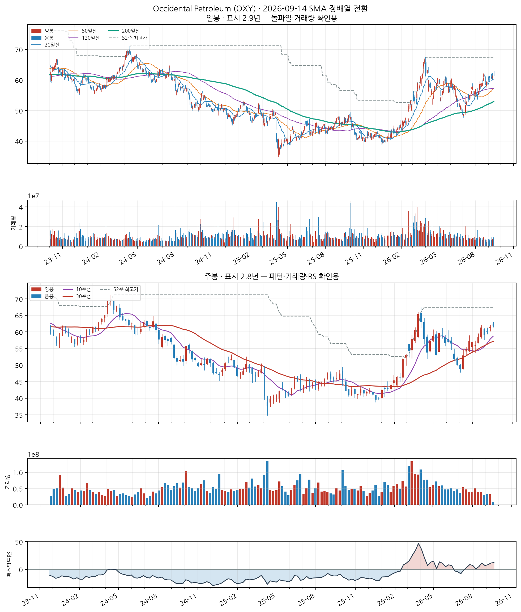
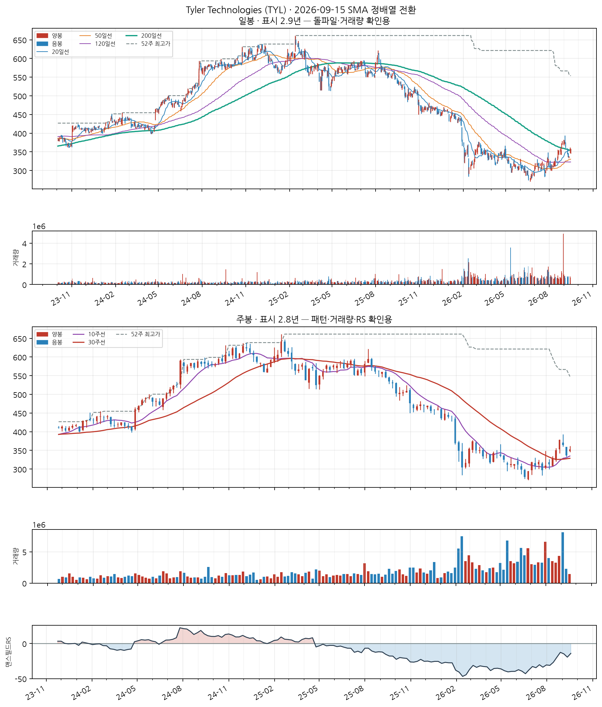
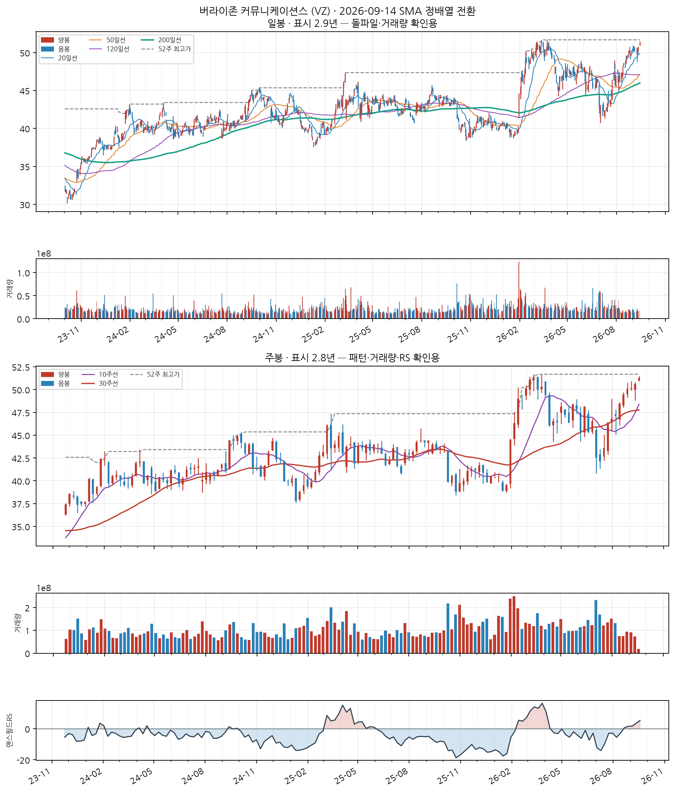

이 전략의 진입 조건
- SMA 정배열 성립 — 20일선 > 50일선 > 120일선 순서가 오늘 성립할 것
- 정배열이 최근에 시작 — 그 정배열이 시작된 지 10거래일 이내일 것 (이미 오래 정배열이던 종목은 제외 — '막 시작한 것'만 잡습니다)
자세히 — 한계와 주의사항
이 두 조건이 게이트 전부입니다. 나머지(거래량·모멘텀)는 순위를 매기는 점수일 뿐 통과 여부를 가르지 않습니다.
점수 = 신선도 + 거래량배수 + 모멘텀
· 신선도: 정배열이 시작된 지 얼마나 됐는지 (오늘 막 시작 = 1.0)
· 거래량배수: 오늘 거래량 ÷ 최근 평균 거래량 (최대 3배)
· 모멘텀: 정배열 시작일 종가 대비 오늘 종가 상승률 ÷ 10 (하락 중이면 0)
52주 신고가 스캐너와 목적이 반대입니다 — 그쪽은 이미 오래 오른 리더주를 계속 잡고, 이쪽은 이제 막 추세가 만들어진 종목만 잡습니다.
백테스트 파라미터(손절 −8%, 익절 +24% 등)는 52주 신고가 스캐너에서 그대로 가져온 값이고 Launch Pad 자체 데이터로 재튜닝한 적이 없습니다.
AES Corporation (AES)
6일전 포착
NASDAQ
Utilities
업종 참고: RS 평균 25/99(업종 중 상위 91%) · 오늘 신호 1건 · 업종 평균이 나스닥종합 대비 -26.4%p(126일), 종목별 편차 ±8%p
🧪 자체 섹터 분류(실험적, 참고용): 나테라·Halozyme 등 16종목 (업종 혼재)
섹터 내 RS 순위: 5/16위 (RS 43/99)
섹터 1~3위: 나테라(96), Halozyme(95), Fluor(71)
※ 자체 상관관계 계산(최근 1년) — 검증 시 기준업종 11개 중 8개 정확. 주 단위로 구성종목이 일부 바뀔 수 있음(주간 일치도 실측 0.53)
종가 $14.81
정배열 10일차거래량비 0.2x정배열 후 +0.0%

📐 차트 패턴 판정: 후보 없음 후보 없음 판정 기준(PDF)
세 패턴에 해당하는 베이스 구조가 최근 구간에 없다.
가장 강한 반증 피벗 구조 자체가 없다(뚜렷한 저점·고점 교대가 최근 26주 안에 없음).
경쟁 후보·더 단순한 설명 더 단순한 설명: 최근 26주 박스권 횡보(등락폭 6.0%)
추가로 필요한 데이터 장중 고저 기준 깊이(여기 수치는 주봉 종가 기준)
패턴만으로 매수 추천이나 목표 달성 확률을 만들지 않습니다. 수치 기준은 잠정치이며 라벨 데이터로 검증되지 않았습니다.
CC — 분기 실적 성장 보통
2026 분기(10-Q) · 순이익 흑자전환($-95M→$+426M) · EPS 흑자전환($-0.1→$+0.6) · 매출 +19.9%
SEC EDGAR(10-Q/10-K) 기준 · 분기 단독 전년동기 대비 · 직전 분기보다 성장률이 낮아짐(감속) — 오닐 C 기준으로 한 단계 낮춤
AA — 연간 실적 성장 미흡
2025 연간(10-K) · 순이익 -45.8% · EPS -46.6% · 매출 -0.4%
SEC EDGAR(10-Q/10-K) 기준 · 연간 전년동기 대비 · 최근 3년 연속 증가는 아님 — 오닐 A 기준 미충족으로 한 단계 낮춤
NN — 신고가·모멘텀 데이터 없음
신고가 데이터 없음
SS — 수급(거래량) 미흡
20일 평균 대비 0.16배
유통주식수·순매수 데이터는 미보유 (거래량으로만 근사)
LL — 주도주(상대강도) 보통
RS 등급 43/99 (126거래일 ≈ 6개월 기준 · 유니버스 952종목 중 백분위) · 지수대비 -16.0%p
상위 시가총액 유니버스 기준 — KRX 전체 대비 백분위 아님 · 오닐의 RS Rating은 52주 기준이지만 여기는 126거래일로, 같은 리포트의 6개월 모멘텀과 기간을 맞춘 값이다(원전과 다름)
II — 기관·외국인 수급 데이터 없음
미국 종목은 기관 수급 데이터 소스 없음 (SEC Form 13F는 최대 45일 지연되는 분기 스냅샷이라 부적합)
MM — 시장방향 양호
IXIC 지수가 60일선 위
**오닐의 M(분산일·추종일 계수)이 아니라 지수의 이동평균 상회 여부**를 쓴 대용값이다 · 실제 매매 필터로는 미적용(표시 전용) — 종목 선별보다 지수 자체 타이밍이 더 효율적이라는 자체 검증 결과 있음 (reports/vs_kospi.md)
Centene Corporation (CNC)
13일전 포착
NASDAQ
Health Care
업종 참고: RS 평균 62/99(업종 중 상위 18%) · 오늘 신호 8건 · 업종 평균이 나스닥종합 대비 +3.1%p(126일), 종목별 편차 ±34%p
🧪 자체 섹터 분류(실험적, 참고용): Health Care (Humana·Centene Corporation 등 6종목)
섹터 내 RS 순위: 2/6위 (RS 97/99)
섹터 1~3위: Humana(98), Centene Corporation(97), Molina Healthcare(92)
※ 자체 상관관계 계산(최근 1년) — 검증 시 기준업종 11개 중 8개 정확. 주 단위로 구성종목이 일부 바뀔 수 있음(주간 일치도 실측 0.53)
종가 $68.30
정배열 3일차거래량비 0.2x정배열 후 -1.6%

📐 차트 패턴 판정: 후보 없음 후보 없음 판정 기준(PDF)
세 패턴 모두 필수 조건을 채운 후보가 없다(가장 가까운 컵위드핸들 후보: 깊이: 컵 깊이 52.7% — 기준 12%~33%(고변동 최대 50%)를 벗어남).
가장 강한 반증 컵위드핸들: 깊이: 컵 깊이 52.7% — 기준 12%~33%(고변동 최대 50%)를 벗어남; 이중바닥: 두 저점 일치: 저점 차이 20.0% — 같은 지지대로 보기 어려움(10% 초과); 역헤드앤숄더: 어깨 대칭: 어깨 높이차 43.6% — 과도(25% 초과)
경쟁 후보·더 단순한 설명 더 단순한 설명: 최근 26주 상승 추세 지속(+96.7%) — 베이스 없음
추가로 필요한 데이터 장중 고저 기준 깊이(여기 수치는 주봉 종가 기준)
패턴만으로 매수 추천이나 목표 달성 확률을 만들지 않습니다. 수치 기준은 잠정치이며 라벨 데이터로 검증되지 않았습니다.
CC — 분기 실적 성장 양호
2026 분기(10-Q) · 순이익 흑자전환($-253M→$+1,091M) · EPS 흑자전환($-0.5→$+2.2) · 매출 +9.9%
SEC EDGAR(10-Q/10-K) 기준 · 분기 단독 전년동기 대비 · 직전 분기보다 성장률이 높아짐(가속)
AA — 연간 실적 성장 미흡
2025 연간(10-K) · 순이익 적자전환($+3,305M→$-6,674M) · EPS 적자전환($+6.3→$-14) · 매출 +19.4%
SEC EDGAR(10-Q/10-K) 기준 · 연간 전년동기 대비 · 최근 3년 연속 증가는 아님 — 오닐 A 기준 미충족으로 한 단계 낮춤
NN — 신고가·모멘텀 데이터 없음
신고가 데이터 없음
SS — 수급(거래량) 미흡
20일 평균 대비 0.18배
유통주식수·순매수 데이터는 미보유 (거래량으로만 근사)
LL — 주도주(상대강도) 우수
RS 등급 97/99 (126거래일 ≈ 6개월 기준 · 유니버스 952종목 중 백분위) · 지수대비 +75.7%p
상위 시가총액 유니버스 기준 — KRX 전체 대비 백분위 아님 · 오닐의 RS Rating은 52주 기준이지만 여기는 126거래일로, 같은 리포트의 6개월 모멘텀과 기간을 맞춘 값이다(원전과 다름)
II — 기관·외국인 수급 데이터 없음
미국 종목은 기관 수급 데이터 소스 없음 (SEC Form 13F는 최대 45일 지연되는 분기 스냅샷이라 부적합)
MM — 시장방향 양호
IXIC 지수가 60일선 위
**오닐의 M(분산일·추종일 계수)이 아니라 지수의 이동평균 상회 여부**를 쓴 대용값이다 · 실제 매매 필터로는 미적용(표시 전용) — 종목 선별보다 지수 자체 타이밍이 더 효율적이라는 자체 검증 결과 있음 (reports/vs_kospi.md)
Materials
업종 참고: RS 평균 50/99(업종 중 상위 27%) · 오늘 신호 3건 · 업종 평균이 나스닥종합 대비 -11.4%p(126일), 종목별 편차 ±21%p
🧪 자체 섹터 분류(실험적, 참고용): Materials (Archer Daniels Midland·Darling Ingredients 등 10종목)
섹터 내 RS 순위: 5/10위 (RS 49/99)
섹터 1~3위: Archer Daniels Midland(83), Darling Ingredients(71), CF Industries(52)
※ 자체 상관관계 계산(최근 1년) — 검증 시 기준업종 11개 중 8개 정확. 주 단위로 구성종목이 일부 바뀔 수 있음(주간 일치도 실측 0.53)
종가 $82.54
정배열 1일차거래량비 0.9x정배열 후 +0.0%

📐 차트 패턴 판정: 이중바닥 형태 완성·미돌파 확신 낮음 판정 기준(PDF)
W 형태는 있으나 중간 고점 89.25를 아직 넘지 못했다.
가장 강한 반증 선행 추세: 선행 추세가 상승(+34.9%) — 상승 중 눌림일 수 있어 반전형 전제가 없다
경쟁 후보·더 단순한 설명 더 단순한 설명: 선행 하락이 없어 반전형이 아니라 상승 추세 중 눌림(조정)일 수 있다
측정표 (주봉 종가 기준, 판정일 2026-09-15 이후 데이터 미사용)
조건별 판정
- 미충족 선행 추세 — 선행 추세가 상승(+34.9%) — 상승 중 눌림일 수 있어 반전형 전제가 없다
- 충족 두 저점 일치 — 저점 차이 0.7% ≤ 6%
- 충족 중간 반등 — 중간 반등 17.2% ≥ 8%
- 충족 기간 — 베이스 24주 ≥ 7주
- 충족 깊이 — 베이스 깊이 10.9% ≤ 40%
- 부분충족 저점2 매도 약화 — 저점2 부근 거래량 = 저점1 부근의 1.09배
- 충족 최근성 — 마지막 구조 피벗(2026-08-14)이 5주 전
- 미충족 넥라인 돌파 — 종가가 아직 확인선 위로 안 올라옴(-7.5%)
- 판정불가 돌파 거래량 — 돌파 전
추가로 필요한 데이터 장중 고저 기준 깊이(여기 수치는 주봉 종가 기준)
패턴만으로 매수 추천이나 목표 달성 확률을 만들지 않습니다. 수치 기준은 잠정치이며 라벨 데이터로 검증되지 않았습니다.
CC — 분기 실적 성장 미흡
2026 분기(10-Q) · 순이익 -11.6% · EPS -9.9% · 매출 -1.2%
SEC EDGAR(10-Q/10-K) 기준 · 분기 단독 전년동기 대비 · 직전 분기보다 성장률이 낮아짐(감속) — 오닐 C 기준으로 한 단계 낮춤
AA — 연간 실적 성장 양호
2025 연간(10-K) · 순이익 +20.6% · EPS +23.1% · 매출 +2.9%
SEC EDGAR(10-Q/10-K) 기준 · 연간 전년동기 대비 · 최근 3년 연간 EPS 연속 증가
NN — 신고가·모멘텀 데이터 없음
신고가 데이터 없음
SS — 수급(거래량) 미흡
20일 평균 대비 0.88배
유통주식수·순매수 데이터는 미보유 (거래량으로만 근사)
LL — 주도주(상대강도) 보통
RS 등급 49/99 (126거래일 ≈ 6개월 기준 · 유니버스 952종목 중 백분위) · 지수대비 -13.1%p
상위 시가총액 유니버스 기준 — KRX 전체 대비 백분위 아님 · 오닐의 RS Rating은 52주 기준이지만 여기는 126거래일로, 같은 리포트의 6개월 모멘텀과 기간을 맞춘 값이다(원전과 다름)
II — 기관·외국인 수급 데이터 없음
미국 종목은 기관 수급 데이터 소스 없음 (SEC Form 13F는 최대 45일 지연되는 분기 스냅샷이라 부적합)
MM — 시장방향 양호
IXIC 지수가 60일선 위
**오닐의 M(분산일·추종일 계수)이 아니라 지수의 이동평균 상회 여부**를 쓴 대용값이다 · 실제 매매 필터로는 미적용(표시 전용) — 종목 선별보다 지수 자체 타이밍이 더 효율적이라는 자체 검증 결과 있음 (reports/vs_kospi.md)
Information Technology
업종 참고: RS 평균 64/99(업종 중 상위 1%) · 오늘 신호 16건 · 업종 평균이 나스닥종합 대비 +12.6%p(126일), 종목별 편차 ±46%p
🧪 자체 섹터 분류(실험적, 참고용): Information Technology (크라우드스트라이크 홀딩스·포티넷 등 11종목)
섹터 내 RS 순위: 2/11위 (RS 98/99)
섹터 1~3위: 크라우드스트라이크 홀딩스(98), 포티넷(98), Okta, Inc.(98)
※ 자체 상관관계 계산(최근 1년) — 검증 시 기준업종 11개 중 8개 정확. 주 단위로 구성종목이 일부 바뀔 수 있음(주간 일치도 실측 0.53)
종가 $172.91
정배열 2일차거래량비 0.2x정배열 후 +0.3%

📐 차트 패턴 판정: 후보 없음 후보 없음 판정 기준(PDF)
세 패턴 모두 필수 조건을 채운 후보가 없다(가장 가까운 컵위드핸들 후보: 깊이: 컵 깊이 56.8% — 기준 12%~33%(고변동 최대 50%)를 벗어남).
가장 강한 반증 컵위드핸들: 깊이: 컵 깊이 56.8% — 기준 12%~33%(고변동 최대 50%)를 벗어남
경쟁 후보·더 단순한 설명 더 단순한 설명: 최근 26주 상승 추세 지속(+111.8%) — 베이스 없음
추가로 필요한 데이터 장중 고저 기준 깊이(여기 수치는 주봉 종가 기준)
패턴만으로 매수 추천이나 목표 달성 확률을 만들지 않습니다. 수치 기준은 잠정치이며 라벨 데이터로 검증되지 않았습니다.
CC — 분기 실적 성장 우수
2026 분기(10-Q) · 순이익 +37.8% · EPS +43.9% · 매출 +25.6%
SEC EDGAR(10-Q/10-K) 기준 · 분기 단독 전년동기 대비 · 직전 분기보다 성장률이 높아짐(가속)
AA — 연간 실적 성장 양호
2025 연간(10-K) · 순이익 +6.2% · EPS +7.1% · 매출 +14.2%
SEC EDGAR(10-Q/10-K) 기준 · 연간 전년동기 대비 · 최근 3년 연간 EPS 연속 증가
NN — 신고가·모멘텀 데이터 없음
신고가 데이터 없음
SS — 수급(거래량) 미흡
20일 평균 대비 0.16배
유통주식수·순매수 데이터는 미보유 (거래량으로만 근사)
LL — 주도주(상대강도) 우수
RS 등급 98/99 (126거래일 ≈ 6개월 기준 · 유니버스 952종목 중 백분위) · 지수대비 +90.8%p
상위 시가총액 유니버스 기준 — KRX 전체 대비 백분위 아님 · 오닐의 RS Rating은 52주 기준이지만 여기는 126거래일로, 같은 리포트의 6개월 모멘텀과 기간을 맞춘 값이다(원전과 다름)
II — 기관·외국인 수급 데이터 없음
미국 종목은 기관 수급 데이터 소스 없음 (SEC Form 13F는 최대 45일 지연되는 분기 스냅샷이라 부적합)
MM — 시장방향 양호
IXIC 지수가 60일선 위
**오닐의 M(분산일·추종일 계수)이 아니라 지수의 이동평균 상회 여부**를 쓴 대용값이다 · 실제 매매 필터로는 미적용(표시 전용) — 종목 선별보다 지수 자체 타이밍이 더 효율적이라는 자체 검증 결과 있음 (reports/vs_kospi.md)
Consumer Discretionary
업종 참고: RS 평균 39/99(업종 중 상위 73%) · 오늘 신호 4건 · 업종 평균이 나스닥종합 대비 -18.8%p(126일), 종목별 편차 ±23%p
🧪 자체 섹터 분류(실험적, 참고용): Avantor·West Pharmaceutical Services 등 30종목 (업종 혼재)
섹터 내 RS 순위: 16/30위 (RS 31/99)
섹터 1~3위: Avantor(98), West Pharmaceutical Services(93), Baxter International(91)
※ 자체 상관관계 계산(최근 1년) — 검증 시 기준업종 11개 중 8개 정확. 주 단위로 구성종목이 일부 바뀔 수 있음(주간 일치도 실측 0.53)
종가 $90.76
정배열 1일차거래량비 0.7x정배열 후 +0.0%

📐 차트 패턴 판정: 후보 없음 후보 없음 판정 기준(PDF)
세 패턴 모두 필수 조건을 채운 후보가 없다(가장 가까운 컵위드핸들 후보: 핸들: 핸들 저점 80.15가 컵 중간값 95.52 아래 — 핸들이 아니라 컵 재하락).
가장 강한 반증 컵위드핸들: 핸들: 핸들 저점 80.15가 컵 중간값 95.52 아래 — 핸들이 아니라 컵 재하락; 이중바닥: 두 저점 일치: 저점 차이 10.9% — 같은 지지대로 보기 어려움(10% 초과)
경쟁 후보·더 단순한 설명 더 단순한 설명: 최근 26주 박스권 횡보(등락폭 23.8%)
추가로 필요한 데이터 장중 고저 기준 깊이(여기 수치는 주봉 종가 기준)
패턴만으로 매수 추천이나 목표 달성 확률을 만들지 않습니다. 수치 기준은 잠정치이며 라벨 데이터로 검증되지 않았습니다.
CC — 분기 실적 성장 양호
2026 분기(10-Q) · 순이익 흑자전환($-856M→$+161M) · EPS 흑자전환($-6.1→$+1.1) · 매출 +13.8%
SEC EDGAR(10-Q/10-K) 기준 · 분기 단독 전년동기 대비 · 직전 분기보다 성장률이 높아짐(가속)
AA — 연간 실적 성장 미흡
2025 연간(10-K) · 순이익 적자전환($+386M→$-322M) · EPS 적자전환($+2.8→$-2.3) · 매출 +13.1%
SEC EDGAR(10-Q/10-K) 기준 · 연간 전년동기 대비 · 최근 3년 연속 증가는 아님 — 오닐 A 기준 미충족으로 한 단계 낮춤
NN — 신고가·모멘텀 데이터 없음
신고가 데이터 없음
SS — 수급(거래량) 미흡
20일 평균 대비 0.70배
유통주식수·순매수 데이터는 미보유 (거래량으로만 근사)
LL — 주도주(상대강도) 보통
RS 등급 31/99 (126거래일 ≈ 6개월 기준 · 유니버스 952종목 중 백분위) · 지수대비 -22.0%p
상위 시가총액 유니버스 기준 — KRX 전체 대비 백분위 아님 · 오닐의 RS Rating은 52주 기준이지만 여기는 126거래일로, 같은 리포트의 6개월 모멘텀과 기간을 맞춘 값이다(원전과 다름)
II — 기관·외국인 수급 데이터 없음
미국 종목은 기관 수급 데이터 소스 없음 (SEC Form 13F는 최대 45일 지연되는 분기 스냅샷이라 부적합)
MM — 시장방향 양호
IXIC 지수가 60일선 위
**오닐의 M(분산일·추종일 계수)이 아니라 지수의 이동평균 상회 여부**를 쓴 대용값이다 · 실제 매매 필터로는 미적용(표시 전용) — 종목 선별보다 지수 자체 타이밍이 더 효율적이라는 자체 검증 결과 있음 (reports/vs_kospi.md)
Hamilton Lane (HLNE)
13일전 포착
NASDAQ
Financials
업종 참고: RS 평균 62/99(업종 중 상위 9%) · 오늘 신호 4건 · 업종 평균이 나스닥종합 대비 -3.2%p(126일), 종목별 편차 ±15%p
🧪 자체 섹터 분류(실험적, 참고용): Financials (Franklin Resources·SEI Investments Company 등 20종목)
섹터 내 RS 순위: 19/20위 (RS 22/99)
섹터 1~3위: Franklin Resources(89), SEI Investments Company(86), Invesco(84)
※ 자체 상관관계 계산(최근 1년) — 검증 시 기준업종 11개 중 8개 정확. 주 단위로 구성종목이 일부 바뀔 수 있음(주간 일치도 실측 0.53)
종가 $93.11
정배열 10일차거래량비 0.2x정배열 후 -9.7%

📐 차트 패턴 판정: 후보 없음 후보 없음 판정 기준(PDF)
세 패턴 모두 필수 조건을 채운 후보가 없다(가장 가까운 이중바닥 후보: 두 저점 일치: 저점 차이 15.7% — 같은 지지대로 보기 어려움(10% 초과)).
가장 강한 반증 이중바닥: 두 저점 일치: 저점 차이 15.7% — 같은 지지대로 보기 어려움(10% 초과); 컵위드핸들: 림 대칭: 좌우 림 차이 30.1% — 오른쪽 림이 낮음, 20% 초과
경쟁 후보·더 단순한 설명 더 단순한 설명: 최근 26주 하락 추세 지속(-6.6%) — 베이스 없음
추가로 필요한 데이터 장중 고저 기준 깊이(여기 수치는 주봉 종가 기준)
패턴만으로 매수 추천이나 목표 달성 확률을 만들지 않습니다. 수치 기준은 잠정치이며 라벨 데이터로 검증되지 않았습니다.
CC — 분기 실적 성장 우수
2027 분기(10-Q) · 순이익 +49.7% · 매출 +56.5%
SEC EDGAR(10-Q/10-K) 기준 · 분기 단독 전년동기 대비 · 직전 분기보다 성장률이 높아짐(가속) · EPS 데이터가 없어 순이익·매출로만 판정 — 자사주 매입 착시를 거르지 못함
AA — 연간 실적 성장 양호
2026 연간(10-K) · 순이익 +14.6% · EPS +41.6% · 매출 +6.5%
SEC EDGAR(10-Q/10-K) 기준 · 연간 전년동기 대비 · 최근 3년 연간 EPS 연속 증가
NN — 신고가·모멘텀 데이터 없음
신고가 데이터 없음
SS — 수급(거래량) 미흡
20일 평균 대비 0.20배
유통주식수·순매수 데이터는 미보유 (거래량으로만 근사)
LL — 주도주(상대강도) 미흡
RS 등급 22/99 (126거래일 ≈ 6개월 기준 · 유니버스 952종목 중 백분위) · 지수대비 -27.6%p
상위 시가총액 유니버스 기준 — KRX 전체 대비 백분위 아님 · 오닐의 RS Rating은 52주 기준이지만 여기는 126거래일로, 같은 리포트의 6개월 모멘텀과 기간을 맞춘 값이다(원전과 다름)
II — 기관·외국인 수급 데이터 없음
미국 종목은 기관 수급 데이터 소스 없음 (SEC Form 13F는 최대 45일 지연되는 분기 스냅샷이라 부적합)
MM — 시장방향 양호
IXIC 지수가 60일선 위
**오닐의 M(분산일·추종일 계수)이 아니라 지수의 이동평균 상회 여부**를 쓴 대용값이다 · 실제 매매 필터로는 미적용(표시 전용) — 종목 선별보다 지수 자체 타이밍이 더 효율적이라는 자체 검증 결과 있음 (reports/vs_kospi.md)
Keurig Dr Pepper (KDP)
12일전 포착
NASDAQ
Consumer Staples
업종 참고: RS 평균 35/99(업종 중 상위 82%) · 오늘 신호 3건 · 업종 평균이 나스닥종합 대비 -21.5%p(126일), 종목별 편차 ±17%p
🧪 자체 섹터 분류(실험적, 참고용): Consumer Staples (J.M. Smucker Company (The)·코카콜라 등 27종목)
섹터 내 RS 순위: 3/27위 (RS 68/99)
섹터 1~3위: J.M. Smucker Company (The)(74), 코카콜라(69), Keurig Dr Pepper(68)
※ 자체 상관관계 계산(최근 1년) — 검증 시 기준업종 11개 중 8개 정확. 주 단위로 구성종목이 일부 바뀔 수 있음(주간 일치도 실측 0.53)
종가 $31.62
정배열 9일차거래량비 0.1x정배열 후 -3.8%

📐 차트 패턴 판정: 컵위드핸들 형태 완성·미돌파 확신 중간 판정 기준(PDF)
컵(17주·깊이 24.2%)+핸들 형태는 있으나 피벗 33.40를 아직 넘지 못했다.
가장 강한 반증 선행 추세: 선행 상승 +4.1% — +20%에 못 미침
경쟁 후보·더 단순한 설명 역헤드앤숄더(형태 완성·미돌파·확신 중간)
측정표 (주봉 종가 기준, 판정일 2026-09-15 이후 데이터 미사용)
조건별 판정
- 부분충족 선행 추세 — 선행 상승 +4.1% — +20%에 못 미침
- 충족 기간 — 컵 17주 (기준 7~65주)
- 충족 깊이 — 컵 깊이 24.2% (기준 12%~33%)
- 충족 림 대칭 — 좌우 림 차이 9.3% ≤ 12%
- 충족 U자 모양 — 저점이 컵 구간의 29% 지점(중앙 부근)
- 충족 베이스 거래량 수축 — 컵 구간 평균 = 직전 17주 평균의 0.91배
- 충족 핸들 — 핸들 4주·깊이 11.1% (기준 ≤15%, 컵 깊이의 절반 이하)
- 부분충족 핸들 거래량 수축 — 핸들 평균 = 컵 구간 평균의 1.23배
- 충족 최근성 — 마지막 구조 피벗(2026-07-24)이 8주 전
- 미충족 피벗 돌파 — 종가가 아직 확인선 위로 안 올라옴(-5.7%)
- 판정불가 돌파 거래량 — 돌파 전
추가로 필요한 데이터 장중 고저 기준 깊이(여기 수치는 주봉 종가 기준)
패턴만으로 매수 추천이나 목표 달성 확률을 만들지 않습니다. 수치 기준은 잠정치이며 라벨 데이터로 검증되지 않았습니다.
CC — 분기 실적 성장 미흡
2026 분기(10-Q) · 순이익 -74.0% · EPS -90.0% · 매출 +75.6%
SEC EDGAR(10-Q/10-K) 기준 · 분기 단독 전년동기 대비 · 직전 분기보다 성장률이 낮아짐(감속) — 오닐 C 기준으로 한 단계 낮춤
AA — 연간 실적 성장 보통
2025 연간(10-K) · 순이익 +44.3% · EPS +45.7% · 매출 +8.2%
SEC EDGAR(10-Q/10-K) 기준 · 연간 전년동기 대비 · 최근 3년 연속 증가는 아님 — 오닐 A 기준 미충족으로 한 단계 낮춤
NN — 신고가·모멘텀 데이터 없음
신고가 데이터 없음
SS — 수급(거래량) 미흡
20일 평균 대비 0.10배
유통주식수·순매수 데이터는 미보유 (거래량으로만 근사)
LL — 주도주(상대강도) 보통
RS 등급 68/99 (126거래일 ≈ 6개월 기준 · 유니버스 952종목 중 백분위) · 지수대비 -2.5%p
상위 시가총액 유니버스 기준 — KRX 전체 대비 백분위 아님 · 오닐의 RS Rating은 52주 기준이지만 여기는 126거래일로, 같은 리포트의 6개월 모멘텀과 기간을 맞춘 값이다(원전과 다름)
II — 기관·외국인 수급 데이터 없음
미국 종목은 기관 수급 데이터 소스 없음 (SEC Form 13F는 최대 45일 지연되는 분기 스냅샷이라 부적합)
MM — 시장방향 양호
IXIC 지수가 60일선 위
**오닐의 M(분산일·추종일 계수)이 아니라 지수의 이동평균 상회 여부**를 쓴 대용값이다 · 실제 매매 필터로는 미적용(표시 전용) — 종목 선별보다 지수 자체 타이밍이 더 효율적이라는 자체 검증 결과 있음 (reports/vs_kospi.md)
Occidental Petroleum (OXY)
신규
NASDAQ
Energy
업종 참고: RS 평균 48/99(업종 중 상위 36%) · 오늘 신호 11건 · 업종 평균이 나스닥종합 대비 -10.2%p(126일), 종목별 편차 ±24%p
🧪 자체 섹터 분류(실험적, 참고용): Energy (HF Sinclair·매러선 페트롤리엄 등 23종목)
섹터 내 RS 순위: 22/23위 (RS 42/99)
섹터 1~3위: HF Sinclair(97), 매러선 페트롤리엄(96), 발레로 에너지(95)
※ 자체 상관관계 계산(최근 1년) — 검증 시 기준업종 11개 중 8개 정확. 주 단위로 구성종목이 일부 바뀔 수 있음(주간 일치도 실측 0.53)
종가 $61.78
정배열 1일차거래량비 1.3x정배열 후 +0.0%

📐 차트 패턴 판정: 이중바닥 돌파 확인 확신 낮음 판정 기준(PDF)
두 저점(53.03/48.91) 뒤 중간 고점 59.62를 종가로 넘었다.
가장 강한 반증 선행 추세: 선행 추세가 상승(+37.6%) — 상승 중 눌림일 수 있어 반전형 전제가 없다
경쟁 후보·더 단순한 설명 컵위드핸들(형성 중·확신 중간) / 더 단순한 설명: 선행 하락이 없어 반전형이 아니라 상승 추세 중 눌림(조정)일 수 있다
측정표 (주봉 종가 기준, 판정일 2026-09-15 이후 데이터 미사용)
조건별 판정
- 미충족 선행 추세 — 선행 추세가 상승(+37.6%) — 상승 중 눌림일 수 있어 반전형 전제가 없다
- 부분충족 두 저점 일치 — 저점 차이 7.8% — 6% 초과
- 충족 중간 반등 — 중간 반등 21.9% ≥ 8%
- 충족 기간 — 베이스 25주 ≥ 7주
- 충족 깊이 — 베이스 깊이 25.1% ≤ 40%
- 충족 저점2 매도 약화 — 저점2 부근 거래량 = 저점1 부근의 0.73배
- 충족 최근성 — 돌파 주(2026-08-21)가 4주 전
- 충족 넥라인 돌파 — 2026-08-21 주 종가 61.30 > 확인선 — 돌파 후 4주 경과
- 미충족 돌파 거래량 — 돌파 주 거래량 = 직전 10주 평균의 0.84배 (기준 1.4배)
추가로 필요한 데이터 장중 고저 기준 깊이(여기 수치는 주봉 종가 기준)
패턴만으로 매수 추천이나 목표 달성 확률을 만들지 않습니다. 수치 기준은 잠정치이며 라벨 데이터로 검증되지 않았습니다.
CC — 분기 실적 성장 우수
2026 분기(10-Q) · 순이익 +540.2% · EPS +957.7% · 매출 +25.7%
SEC EDGAR(10-Q/10-K) 기준 · 분기 단독 전년동기 대비 · 직전 분기보다 성장률이 높아짐(가속)
AA — 연간 실적 성장 미흡
2025 연간(10-K) · 순이익 -23.0% · EPS -34.0% · 매출 -19.2%
SEC EDGAR(10-Q/10-K) 기준 · 연간 전년동기 대비 · 최근 3년 연속 증가는 아님 — 오닐 A 기준 미충족으로 한 단계 낮춤
NN — 신고가·모멘텀 데이터 없음
신고가 데이터 없음
SS — 수급(거래량) 양호
20일 평균 대비 1.28배
유통주식수·순매수 데이터는 미보유 (거래량으로만 근사)
LL — 주도주(상대강도) 보통
RS 등급 42/99 (126거래일 ≈ 6개월 기준 · 유니버스 952종목 중 백분위) · 지수대비 -16.3%p
상위 시가총액 유니버스 기준 — KRX 전체 대비 백분위 아님 · 오닐의 RS Rating은 52주 기준이지만 여기는 126거래일로, 같은 리포트의 6개월 모멘텀과 기간을 맞춘 값이다(원전과 다름)
II — 기관·외국인 수급 데이터 없음
미국 종목은 기관 수급 데이터 소스 없음 (SEC Form 13F는 최대 45일 지연되는 분기 스냅샷이라 부적합)
MM — 시장방향 양호
IXIC 지수가 60일선 위
**오닐의 M(분산일·추종일 계수)이 아니라 지수의 이동평균 상회 여부**를 쓴 대용값이다 · 실제 매매 필터로는 미적용(표시 전용) — 종목 선별보다 지수 자체 타이밍이 더 효율적이라는 자체 검증 결과 있음 (reports/vs_kospi.md)
Tyler Technologies (TYL)
5일전 포착
NASDAQ
Information Technology
업종 참고: RS 평균 64/99(업종 중 상위 1%) · 오늘 신호 16건 · 업종 평균이 나스닥종합 대비 +12.6%p(126일), 종목별 편차 ±46%p
🧪 자체 섹터 분류(실험적, 참고용): H&R Block·오토매틱 데이터 프로세싱 등 29종목 (업종 혼재)
섹터 내 RS 순위: 17/29위 (RS 34/99)
섹터 1~3위: H&R Block(90), 오토매틱 데이터 프로세싱(84), FactSet(84)
※ 자체 상관관계 계산(최근 1년) — 검증 시 기준업종 11개 중 8개 정확. 주 단위로 구성종목이 일부 바뀔 수 있음(주간 일치도 실측 0.53)
종가 $347.43
정배열 9일차거래량비 0.1x정배열 후 -8.4%

📐 차트 패턴 판정: 컵위드핸들 형성 중 확신 낮음 판정 기준(PDF)
컵 구조(28주·깊이 25.5%)는 있으나 핸들이 아직 없다 — 형성 중.
가장 강한 반증 선행 추세: 선행 추세가 하락(-33.1%) — 지속형 컵의 전제가 없다(라운딩 바텀 가능)
경쟁 후보·더 단순한 설명 이중바닥(실패·확신 낮음) / 더 단순한 설명: 선행 상승이 없어 컵이 아니라 하락 뒤 라운딩 바텀일 수 있다
측정표 (주봉 종가 기준, 판정일 2026-09-15 이후 데이터 미사용)
조건별 판정
- 미충족 선행 추세 — 선행 추세가 하락(-33.1%) — 지속형 컵의 전제가 없다(라운딩 바텀 가능)
- 충족 기간 — 컵 28주 (기준 7~65주)
- 충족 깊이 — 컵 깊이 25.5% (기준 12%~33%)
- 충족 림 대칭 — 좌우 림 차이 5.7% ≤ 12%
- 충족 U자 모양 — 저점이 컵 구간의 54% 지점(중앙 부근)
- 미충족 베이스 거래량 수축 — 컵 구간 평균 = 직전 28주 평균의 1.56배
- 판정불가 핸들 — 오른쪽 림 이후 봉이 없어 핸들 미형성
- 충족 최근성 — 마지막 구조 피벗(2026-09-18)이 0주 전
- 미충족 피벗 돌파 — 종가가 아직 확인선 위로 안 올라옴(+0.0%)
- 판정불가 돌파 거래량 — 돌파 전
추가로 필요한 데이터 장중 고저 기준 깊이(여기 수치는 주봉 종가 기준)
패턴만으로 매수 추천이나 목표 달성 확률을 만들지 않습니다. 수치 기준은 잠정치이며 라벨 데이터로 검증되지 않았습니다.
CC — 분기 실적 성장 양호
2026 분기(10-Q) · 순이익 +10.5% · EPS +15.5% · 매출 +8.2%
SEC EDGAR(10-Q/10-K) 기준 · 분기 단독 전년동기 대비 · 직전 분기보다 성장률이 높아짐(가속)
AA — 연간 실적 성장 양호
2025 연간(10-K) · 순이익 +20.0% · EPS +19.0% · 매출 +9.1%
SEC EDGAR(10-Q/10-K) 기준 · 연간 전년동기 대비 · 최근 3년 연간 EPS 연속 증가
NN — 신고가·모멘텀 데이터 없음
신고가 데이터 없음
SS — 수급(거래량) 미흡
20일 평균 대비 0.07배
유통주식수·순매수 데이터는 미보유 (거래량으로만 근사)
LL — 주도주(상대강도) 보통
RS 등급 34/99 (126거래일 ≈ 6개월 기준 · 유니버스 952종목 중 백분위) · 지수대비 -20.1%p
상위 시가총액 유니버스 기준 — KRX 전체 대비 백분위 아님 · 오닐의 RS Rating은 52주 기준이지만 여기는 126거래일로, 같은 리포트의 6개월 모멘텀과 기간을 맞춘 값이다(원전과 다름)
II — 기관·외국인 수급 데이터 없음
미국 종목은 기관 수급 데이터 소스 없음 (SEC Form 13F는 최대 45일 지연되는 분기 스냅샷이라 부적합)
MM — 시장방향 양호
IXIC 지수가 60일선 위
**오닐의 M(분산일·추종일 계수)이 아니라 지수의 이동평균 상회 여부**를 쓴 대용값이다 · 실제 매매 필터로는 미적용(표시 전용) — 종목 선별보다 지수 자체 타이밍이 더 효율적이라는 자체 검증 결과 있음 (reports/vs_kospi.md)
버라이존 커뮤니케이션스 (VZ)
신규
NYSE
Communication Services
업종 참고: RS 평균 43/99(업종 중 상위 54%) · 오늘 신호 5건 · 업종 평균이 나스닥종합 대비 -16.9%p(126일), 종목별 편차 ±22%p
🧪 자체 섹터 분류(실험적, 참고용): Consumer Staples (J.M. Smucker Company (The)·코카콜라 등 27종목)
섹터 내 RS 순위: 7/27위 (RS 39/99)
섹터 1~3위: J.M. Smucker Company (The)(74), 코카콜라(69), Keurig Dr Pepper(68)
※ 자체 상관관계 계산(최근 1년) — 검증 시 기준업종 11개 중 8개 정확. 주 단위로 구성종목이 일부 바뀔 수 있음(주간 일치도 실측 0.53)
종가 $51.29
정배열 1일차거래량비 1.0x정배열 후 +0.0%

📐 차트 패턴 판정: 이중바닥 돌파 확인 확신 낮음 판정 기준(PDF)
두 저점(46.04/45.37) 뒤 중간 고점 48.35를 종가로 넘었다.
가장 강한 반증 선행 추세: 선행 추세가 상승(+16.9%) — 상승 중 눌림일 수 있어 반전형 전제가 없다
경쟁 후보·더 단순한 설명 컵위드핸들(형성 중·확신 낮음) / 더 단순한 설명: 선행 하락이 없어 반전형이 아니라 상승 추세 중 눌림(조정)일 수 있다
측정표 (주봉 종가 기준, 판정일 2026-09-15 이후 데이터 미사용)
조건별 판정
- 미충족 선행 추세 — 선행 추세가 상승(+16.9%) — 상승 중 눌림일 수 있어 반전형 전제가 없다
- 충족 두 저점 일치 — 저점 차이 1.5% ≤ 6% · 두 번째 저점이 첫 저점을 언더컷(IBD 선호)
- 부분충족 중간 반등 — 중간 반등 6.6% — 8% 미만이라 W가 약함
- 충족 기간 — 베이스 27주 ≥ 7주
- 충족 깊이 — 베이스 깊이 11.7% ≤ 40%
- 충족 저점2 매도 약화 — 저점2 부근 거래량 = 저점1 부근의 0.89배
- 충족 최근성 — 돌파 주(2026-08-14)가 5주 전
- 충족 넥라인 돌파 — 2026-08-14 주 종가 48.48 > 확인선 — 돌파 후 5주 경과
- 미충족 돌파 거래량 — 돌파 주 거래량 = 직전 10주 평균의 0.51배 (기준 1.4배)
추가로 필요한 데이터 장중 고저 기준 깊이(여기 수치는 주봉 종가 기준)
패턴만으로 매수 추천이나 목표 달성 확률을 만들지 않습니다. 수치 기준은 잠정치이며 라벨 데이터로 검증되지 않았습니다.
CC — 분기 실적 성장 미흡
2026 분기(10-Q) · 순이익 -23.3% · EPS -22.0% · 매출 -0.7%
SEC EDGAR(10-Q/10-K) 기준 · 분기 단독 전년동기 대비 · 직전 분기보다 성장률이 낮아짐(감속) — 오닐 C 기준으로 한 단계 낮춤
AA — 연간 실적 성장 미흡
2025 연간(10-K) · 순이익 -1.9% · EPS -1.9% · 매출 +2.5%
SEC EDGAR(10-Q/10-K) 기준 · 연간 전년동기 대비 · 최근 3년 연속 증가는 아님 — 오닐 A 기준 미충족으로 한 단계 낮춤
NN — 신고가·모멘텀 데이터 없음
신고가 데이터 없음
SS — 수급(거래량) 양호
20일 평균 대비 1.04배
유통주식수·순매수 데이터는 미보유 (거래량으로만 근사)
LL — 주도주(상대강도) 보통
RS 등급 39/99 (126거래일 ≈ 6개월 기준 · 유니버스 952종목 중 백분위) · 지수대비 -18.0%p
상위 시가총액 유니버스 기준 — KRX 전체 대비 백분위 아님 · 오닐의 RS Rating은 52주 기준이지만 여기는 126거래일로, 같은 리포트의 6개월 모멘텀과 기간을 맞춘 값이다(원전과 다름)
II — 기관·외국인 수급 데이터 없음
미국 종목은 기관 수급 데이터 소스 없음 (SEC Form 13F는 최대 45일 지연되는 분기 스냅샷이라 부적합)
MM — 시장방향 양호
IXIC 지수가 60일선 위
**오닐의 M(분산일·추종일 계수)이 아니라 지수의 이동평균 상회 여부**를 쓴 대용값이다 · 실제 매매 필터로는 미적용(표시 전용) — 종목 선별보다 지수 자체 타이밍이 더 효율적이라는 자체 검증 결과 있음 (reports/vs_kospi.md)